Tres litros al día que la sangre no sabe recuperar, seiscientos filtros repartidos por el cuerpo, y un órgano que quedó fuera de la red a propósito
Responde con lo que ya sabes, sin buscar. No hay nota. Al final de la segunda sesión volvemos sobre las cinco: la última solo se puede contestar entera cuando lleguemos al ojo.
Te haces un corte pequeño en un dedo y al rato está hinchado. Ese líquido salió de alguna parte y tendrá que irse por alguna parte. ¿De dónde sale y por dónde se va?
El sistema circulatorio es un circuito cerrado: la sangre sale del corazón y vuelve al corazón. El linfático no: empieza en fondo de saco, como una calle sin salida, y desemboca en una vena. ¿Por qué esa diferencia?
Cuando alguien llega con fiebre y dolor de garganta, el médico le palpa el cuello antes que nada. ¿Qué está buscando, y por qué ahí?
Después de una cirugía de mama, a algunas mujeres se les hincha el brazo de ese lado y ya no vuelve a la normalidad. ¿Qué se quitó en la cirugía para que eso pase?
Un trasplante de riñón necesita un donante compatible y medicamentos de por vida. Un trasplante de córnea se hace sin buscar compatibilidad y casi nunca se rechaza. ¿Qué tiene la córnea que no tiene el riñón? (Esta queda abierta hasta la sesión 2.)
En la clase pasada vimos el capilar sanguíneo. En su extremo arterial la presión empuja líquido hacia fuera; en el extremo venoso, las proteínas del plasma lo vuelven a llamar hacia dentro. Pero las dos cantidades no son iguales: cada día salen de los capilares unos 20 litros y regresan por las vénulas unos 17.
Sobran tres litros al día. Si esos tres litros se quedaran en los tejidos, en pocas horas habría edema generalizado y el volumen de sangre circulante caería a niveles incompatibles con la vida. El sistema linfático es el que los devuelve. No es un sistema accesorio: es el que cierra las cuentas del líquido corporal.
Devuelve a la sangre el líquido y, sobre todo, las proteínas que se escaparon del plasma. Las proteínas son demasiado grandes para volver a entrar en el capilar sanguíneo: solo pueden regresar por la vía linfática.
Las grasas de la dieta no pasan a los capilares sanguíneos del intestino. Entran en unos capilares linfáticos especiales, los quilíferos, y forman un líquido blanco lechoso: el quilo.
Toda la linfa pasa obligatoriamente por al menos un ganglio antes de volver a la sangre. El ganglio es un filtro donde lo que viene del tejido queda expuesto a las células de defensa.
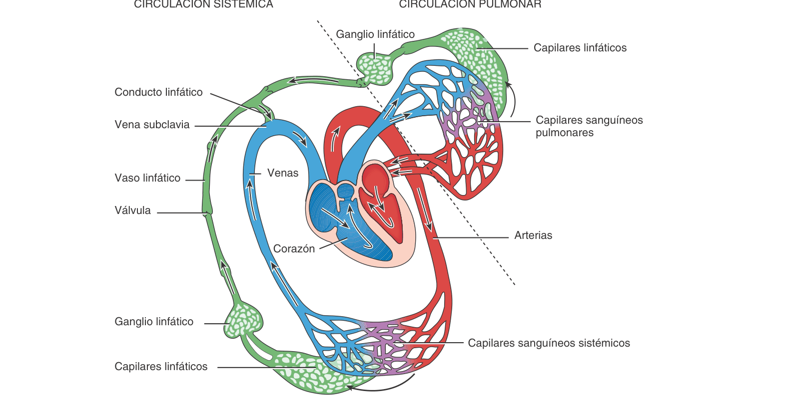
Fíjate en la forma del dibujo. El circuito sanguíneo es un anillo cerrado; el linfático es un ramal de una sola dirección que arranca en el tejido y termina en una vena grande, cerca del corazón. Esa asimetría explica todo lo demás: si no es un anillo, no hace falta una bomba central, pero sí hacen falta muchas válvulas.
El capilar linfático empieza en fondo ciego, cerrado por un extremo, entre las células. Es más ancho que el sanguíneo y de calibre irregular. Su pared es un endotelio muy fino, sin membrana basal continua.
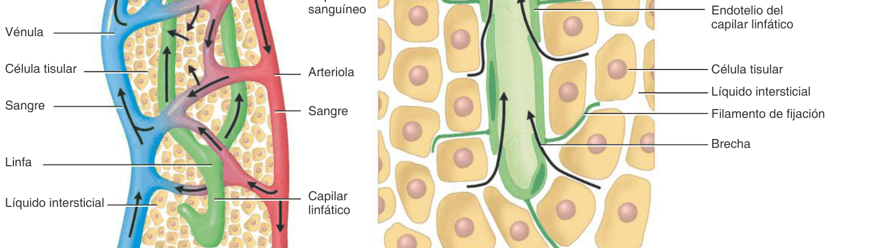
No hay una válvula fabricada aparte: son las propias células endoteliales, montadas unas sobre otras, las que dejan entrar y no dejan salir. La válvula es la arquitectura.
Unos filamentos anclan el endotelio al tejido de alrededor. Cuando el tejido se hincha, los filamentos tiran y abren las brechas. Es decir: el capilar linfático se abre más justo cuando más se le necesita.
Esta lista importa más que la de dónde sí los hay, y una de sus entradas es la razón de ser de media sesión 2:
Anota ya el dato: la córnea no tiene vasos sanguíneos ni linfáticos. Es la única parte del cuerpo con esa doble ausencia en una superficie tan expuesta. Todavía no vamos a explicar qué consecuencias tiene —eso es la sesión 2—, pero conviene que la palabra «córnea» quede pegada a la palabra «alinfática» desde hoy.
El calibre va creciendo por etapas, y en cada salto cambia el nombre:
capilar linfático → vaso linfático (atraviesa uno o más ganglios) → tronco linfático → conducto → vena
Los vasos linfáticos se parecen mucho a las venas: endotelio, una túnica media fibromuscular delgada y una adventicia. Pero llevan muchas más válvulas, y muy juntas. Entre dos válvulas la pared se dilata, así que el vaso lleno tiene aspecto arrosariado, como un collar de cuentas. Ese segmento entre dos válvulas —el linfangión— se contrae por su cuenta y empuja la linfa al siguiente.
Al final de cada región los vasos confluyen en troncos. Son estos, y conviene aprenderlos por la región que drenan, no como lista suelta:
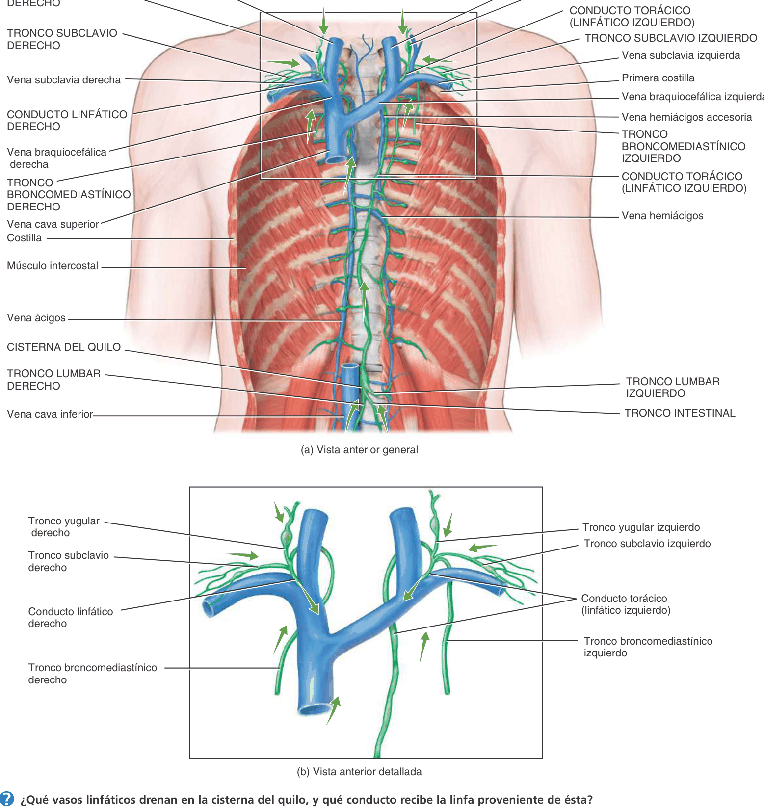
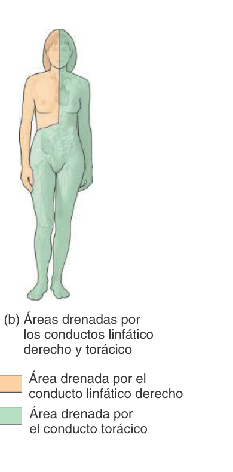
La regla del cuadrante superior derecho. El conducto linfático derecho —apenas 1,2 cm— recoge la linfa de la mitad derecha de la cabeza y el cuello, el miembro superior derecho y el hemitórax derecho. Todo lo demás, las tres cuartas partes del cuerpo, va al conducto torácico: las dos piernas, el abdomen, el hemitórax izquierdo y la mitad izquierda de la cabeza.
Es el vaso linfático más grande del cuerpo: 38 a 45 cm de largo y unos 5 mm de calibre.
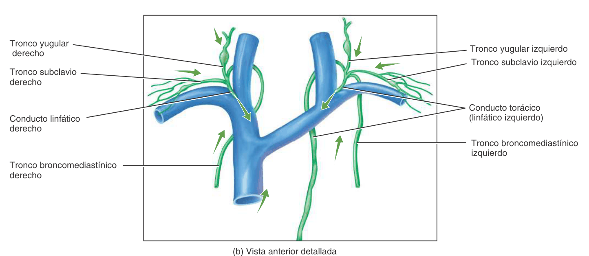
Nada bombea la linfa. Sube por la suma de cuatro cosas, tres de las cuales ya conoces de las venas:
Impiden el retroceso. Sin ellas, ninguna de las otras tres serviría de nada.
El músculo esquelético al contraerse ordeña los vasos linfáticos, igual que hace con las venas.
Al inspirar, la presión abdominal sube y la torácica baja: la linfa es aspirada hacia el tórax.
Y la cuarta, que las venas no tienen: el propio linfangión se contrae. El músculo liso de la pared responde a la distensión contrayéndose, de segmento en segmento.
Aquí está la respuesta a la cuarta pregunta del principio. En la cirugía de mama se extirpan ganglios axilares: se corta la vía de drenaje del brazo y el líquido se queda, produciendo un linfedema que no cede con reposo ni con diuréticos, porque no es un problema de exceso de líquido sino de cañería. Verás lo mismo, en pequeño, en el párpado: un edema que no cede de la noche a la mañana orienta a obstrucción del drenaje, no a inflamación aguda.
Hay unos 600 ganglios en el cuerpo. Miden de 1 a 25 mm y tienen forma de alubia o de riñón: una cara convexa y una escotadura, el hilio. Están dispersos, pero se agrupan en cadenas y en grupos regionales —cuello, axila, ingle, mediastino, mesenterio—.
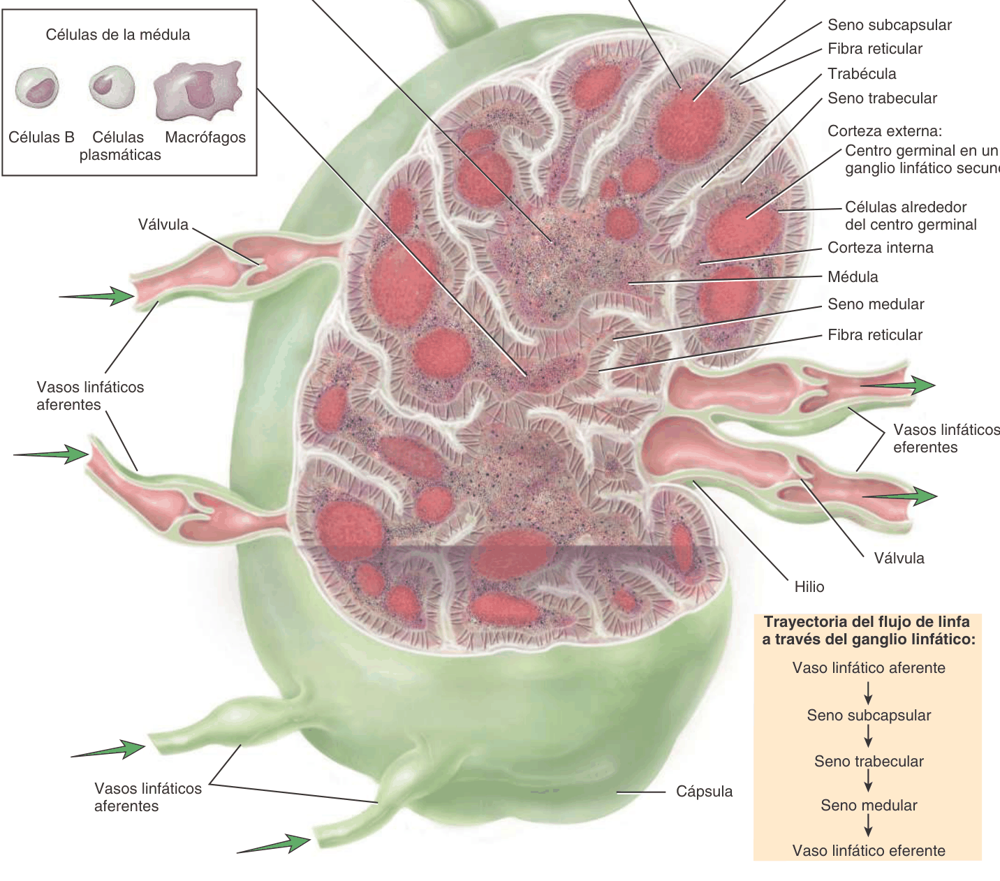
vaso aferente → seno subcapsular → seno trabecular → seno medular → vaso eferente
Entran muchos, sale uno. Los vasos aferentes son varios y llegan por toda la superficie convexa. Los eferentes son pocos —a veces uno solo— y salen por el hilio. Como la sección de entrada es mucho mayor que la de salida, la linfa se remansa dentro del ganglio. Esa lentitud es justamente lo que da tiempo a que el contenido sea revisado: un filtro no funciona si el líquido pasa deprisa.
Por el hilio, además, entran y salen los vasos sanguíneos del ganglio. No confundas las dos circulaciones: la linfa atraviesa el ganglio y sigue su camino; la sangre lo irriga y vuelve por su vena.
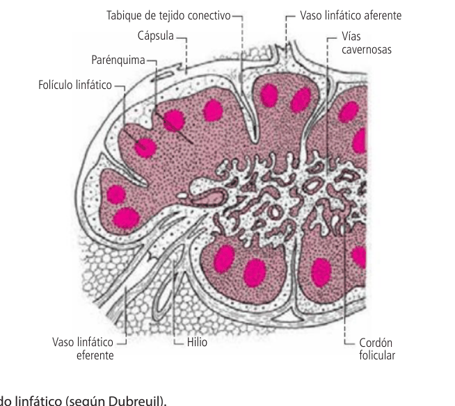
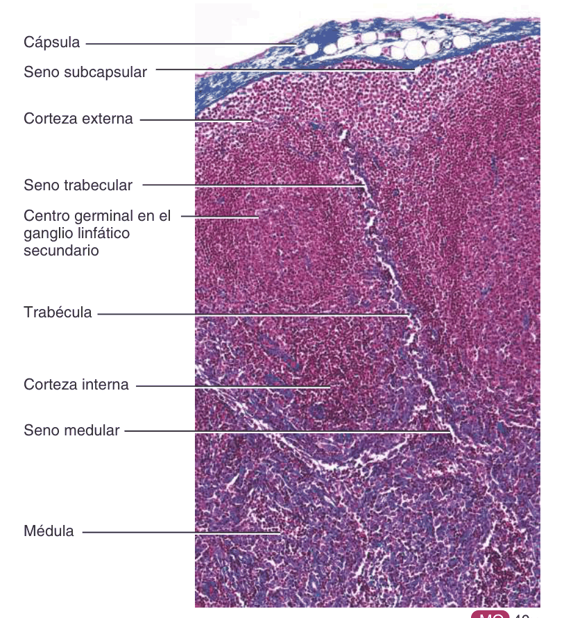
Un ganglio se palpa cuando crece, y cómo crece dice mucho. Blando, móvil y doloroso orienta a una causa inflamatoria o infecciosa reciente: es el ganglio que se palpa en una conjuntivitis viral. Duro, fijo al plano profundo, indoloro y de más de 2 cm obliga a pensar en otra cosa y a remitir. La regla práctica: un ganglio que duele suele ser mejor noticia que uno que no duele.
Esta es la lámina que hay que salir sabiendo leer. Todo lo que drena la cara, el cuero cabelludo y —lo veremos en la segunda sesión— los anexos del ojo, termina en alguno de estos grupos.
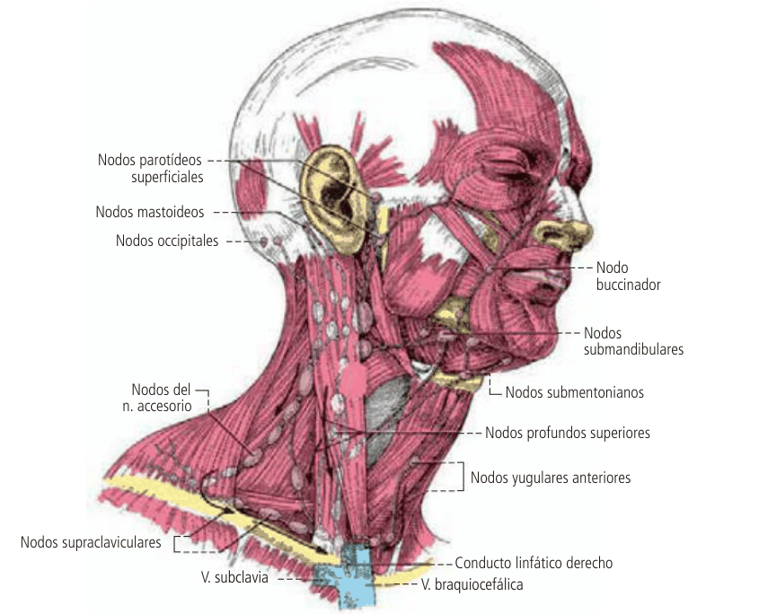
En el límite entre la cabeza y el cuello los ganglios se disponen formando un anillo. De atrás hacia delante:
Acompañan a la vena yugular externa. Recogen la parte inferior del pabellón auricular y la región parotídea.
Acompañan a la vena yugular interna, por debajo del esternocleidomastoideo. Son la vía final: todo lo del collar termina aquí.
Dentro de los profundos hay dos con nombre propio, porque se palpan y porque se agrandan mucho: el yugulodigástrico —el ganglio de la amígdala, en el cruce de la yugular interna con el vientre posterior del digástrico— y el yuguloomohioideo, más abajo.
collar pericervical → cadena yugular interna → tronco yugular → conducto linfático derecho (lado derecho) · conducto torácico (lado izquierdo)
En la práctica clínica y quirúrgica el cuello se divide en seis niveles numerados. No hace falta memorizarlos hoy, pero sí saber que existen y que los vas a ver escritos en informes:
Labio, mentón, piso de la boca, lengua anterior.
Faringe, amígdala y parte de la cara. Aquí está el yugulodigástrico.
Laringe e hipofaringe.
Laringe, tiroides, esófago. Incluye la región supraclavicular.
Cuero cabelludo posterior y nasofaringe.
Tiroides y tráquea.
Un ganglio supraclavicular —justo encima de la clavícula— es el que más preocupa de todo el cuello: por ahí desemboca el drenaje del tórax y del abdomen, y del lado izquierdo está la terminación del conducto torácico. Si en una consulta de optometría se palpa un ganglio ahí, no es un hallazgo ocular: es una remisión.
Toca la tarjeta para ver la definición. El nombre en latín es el de la Terminologia Anatomica; es el que aparece en los atlas y en los informes.
Conjunto de linfa, vasos linfáticos, ganglios y órganos linfoides.
👁 Devuelve a la sangre lo que el capilar dejó en el tejido.
Líquido claro contenido en los vasos linfáticos; procede del líquido intersticial.
👁 Del latín lympha, agua clara.
Vaso de origen, cerrado en fondo ciego, con endotelio solapado y filamentos de fijación.
👁 Falta en la córnea y en el cristalino.
Conducto de pared fina y muy valvulado que transporta la linfa hacia los troncos.
👁 Lleno, tiene aspecto arrosariado.
Segmento de vaso comprendido entre dos válvulas; se contrae de forma autónoma.
👁 Es la unidad que bombea, a falta de corazón linfático.
Órgano encapsulado, en forma de alubia, intercalado en el trayecto de los vasos linfáticos.
👁 La TA2 prefiere «nodo»; la clínica dice «ganglio».
Envoltura de tejido conectivo denso del ganglio, de la que parten las trabéculas.
👁 Su presencia distingue al ganglio del tejido linfoide difuso.
Prolongación de la cápsula hacia el interior; divide el ganglio y guía los vasos sanguíneos.
👁 Entre trabéculas quedan los senos trabeculares.
Parte periférica del ganglio; la externa contiene los folículos con centro germinal.
👁 Es lo primero que encuentra la linfa tras el seno subcapsular.
Parte central del ganglio, organizada en cordones separados por senos medulares.
👁 Último tramo antes de salir por el hilio.
Escotadura del ganglio por donde salen los eferentes y entran y salen los vasos sanguíneos.
👁 Puerta de salida, nunca de entrada de la linfa.
Vaso que lleva la linfa al ganglio; son varios y llegan por la cara convexa.
👁 Ad-ferre, llevar hacia.
Vaso que saca la linfa del ganglio por el hilio; son pocos, a veces uno solo.
👁 Que entren más de los que salen es lo que remansa la linfa.
Dilatación de origen del conducto torácico, a la altura de la segunda vértebra lumbar.
👁 Recibe los troncos lumbares y el intestinal.
Linfa intestinal cargada de grasa absorbida, de aspecto blanco lechoso.
👁 Se recoge en los quilíferos de las vellosidades.
Vaso linfático mayor del cuerpo; drena las tres cuartas partes y termina a la izquierda.
👁 De 38 a 45 cm; sube por detrás de la aorta.
Conducto de 1,2 cm que drena el cuadrante superior derecho del cuerpo.
👁 Mitad derecha de cabeza y cuello, brazo y hemitórax derechos.
Tronco que recoge toda la linfa de la cabeza y el cuello de su lado.
👁 La vía final de todo lo que drena el ojo y sus anexos.
Grupo situado por delante del trago, sobre la glándula parótida.
👁 Son los «preauriculares» de la clínica.
Grupo situado bajo el borde inferior de la mandíbula.
👁 Recogen el ángulo interno del ojo y el párpado medial.
Cadena que acompaña a la vena yugular interna; vía final del drenaje cervicofacial.
👁 Contiene el yugulodigástrico y el yuguloomohioideo.
Agregado esférico de tejido linfoide; cuando está activo muestra un centro germinal claro.
👁 Los hay también fuera del ganglio, en las mucosas.
Contesta sin volver arriba. Cada pregunta se responde una sola vez: elige y luego lee la explicación, la aciertes o no.
1. ¿Cuánto líquido devuelve cada día el sistema linfático a la sangre?
2. ¿Por qué las proteínas que se escapan del plasma solo pueden volver a la sangre por la vía linfática?
3. ¿Qué hace que el capilar linfático se abra más justo cuando el tejido se hincha?
4. ¿Cuál de estos tejidos NO tiene capilares linfáticos?
5. ¿Dónde se encuentra la cisterna del quilo?
6. La linfa del miembro inferior izquierdo llega a la sangre a través de…
7. ¿Qué estructura recoge la linfa del hemitórax derecho y del miembro superior derecho?
8. ¿Por dónde abandonan el ganglio los vasos linfáticos eferentes?
9. ¿Cuál es el recorrido de la linfa dentro del ganglio?
10. ¿Por qué la linfa circula despacio dentro del ganglio?
11. Los ganglios que la clínica llama «preauriculares» corresponden, anatómicamente, a los…
12. Un ganglio cervical duro, fijo al plano profundo, indoloro y de 3 cm sugiere…
13. ¿Qué segmento de la pared del vaso linfático se contrae por su cuenta y empuja la linfa al siguiente tramo?
14. ¿Qué es el quilo?
15. ¿Dónde desemboca el conducto torácico?
16. Una mujer de 45 años, operada de mama derecha hace dos años con extirpación de los ganglios de la axila, consulta porque el brazo derecho se le hincha de forma permanente y no mejora al elevarlo durante la noche. ¿Cuál es la explicación morfológica más probable?
Lo que hay que llevarse de esta sesión. El linfático no es un circuito sino un desagüe de una sola dirección: empieza ciego en el tejido, recoge los tres litros y las proteínas que el capilar sanguíneo no puede recuperar, los hace pasar obligatoriamente por ganglios que funcionan como filtros, y los devuelve a la vena en la base del cuello. Dos conductos reparten el cuerpo: el derecho se ocupa de un cuadrante, el torácico de todo lo demás. Y en la cabeza, todo converge en la cadena yugular interna. En la sesión 2 llevamos ese mapa al ojo, que es el lugar donde el sistema linfático resulta más interesante por lo que le falta.
En la primera sesión vimos la cañería. Ahora vemos los órganos que están intercalados en ella o conectados a ella. Se dividen en dos grupos según lo que ocurre dentro.
Es donde las células de defensa nacen y maduran, antes de haber visto nada. Son dos: la médula ósea roja y el timo.
Es donde esas células ya maduras se encuentran con lo que llega de fuera. Son los ganglios, el bazo y el tejido linfoide de las mucosas.
El criterio morfológico que los separa es la cápsula. El ganglio y el bazo tienen cápsula de tejido conectivo: son órganos. El tejido linfoide de las mucosas no la tiene: son agregados difusos de células dentro de la pared de un tubo. Por eso a los ganglios y al bazo se les llama órganos, y a los nódulos de las mucosas, tejido.
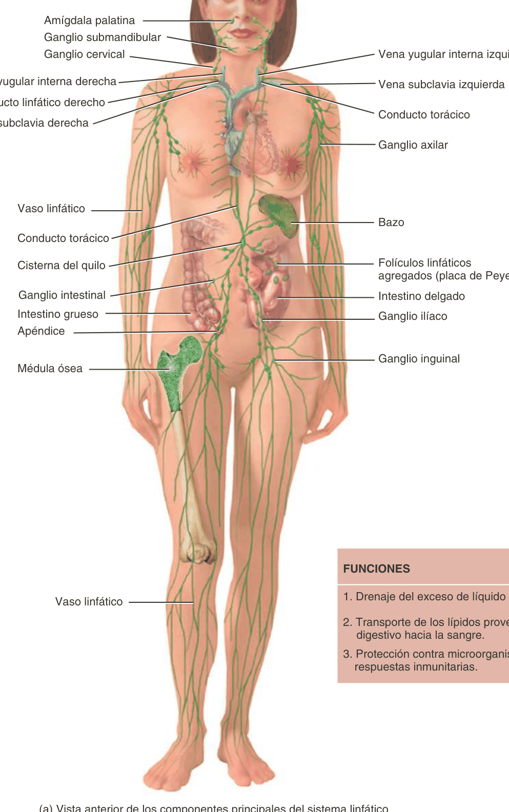
Ocupa el interior de los huesos planos —esternón, costillas, ilíaco, cráneo— y las epífisis de los huesos largos. En el recién nacido está en casi todos los huesos; con la edad va siendo sustituida por médula amarilla, grasa. De ella salen todas las células de la sangre, incluidas las linfáticas.
Curiosamente, la médula ósea no tiene vasos linfáticos, aunque sea el origen del sistema: lo que produce, lo entrega directamente a la sangre.
Órgano bilobulado situado en el mediastino superior, por detrás del manubrio del esternón y por delante de los grandes vasos. Cada lóbulo tiene una cápsula de la que parten trabéculas que lo dividen en lobulillos, y cada lobulillo tiene corteza —densa y oscura— y médula —más clara—.
El timo es el único órgano que se encoge a propósito. Pesa unos 70 gramos en el lactante, empieza a reducirse tras la pubertad y en el anciano apenas conserva 3 gramos de tejido activo: el resto se ha sustituido por grasa. Fíjate en el detalle fino: la cápsula no cambia de tamaño, así que el órgano parece el mismo por fuera mientras por dentro se vacía. Es lo que se llama involución tímica, y es normal, no patológico.
Es la masa de tejido linfoide más grande del cuerpo: unos 12 cm de largo. Está en el hipocondrio izquierdo, entre la 9.ª y la 11.ª costillas, por detrás del estómago y por encima del riñón izquierdo.
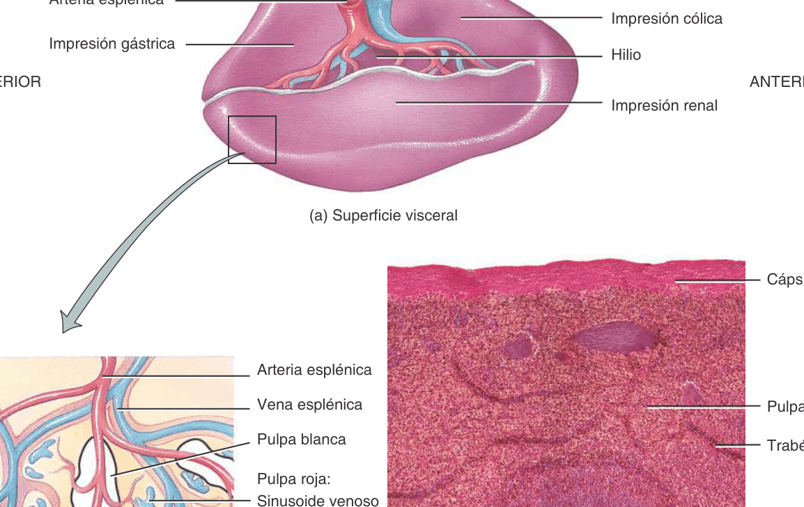
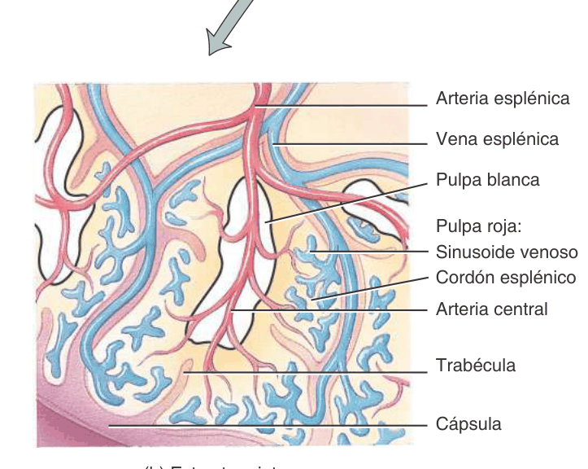
Tejido linfoide dispuesto como un manguito alrededor de las arterias centrales. Es la parte «linfática» del bazo.
Senos venosos llenos de sangre y cordones esplénicos entre ellos. Es la parte que trabaja con los glóbulos rojos.
El bazo filtra sangre, no linfa. Es la diferencia decisiva con el ganglio. Por eso el bazo no tiene vasos linfáticos aferentes: no está intercalado en la vía linfática, sino en la sanguínea. Retira los eritrocitos viejos, guarda plaquetas y, antes de nacer, fabrica células sanguíneas.
El bazo es frágil: está cubierto por una cápsula fina y muy vascularizado, así que un traumatismo en el costado izquierdo puede romperlo y provocar una hemorragia grave. No es un tema ocular, pero sí un dato que conviene tener: en un paciente politraumatizado que llega con una contusión orbitaria, el ojo puede no ser lo más urgente.
Donde el exterior toca al interior —boca, faringe, intestino, vías respiratorias, superficie ocular— hay tejido linfoide. No encapsulado, sino incrustado en la pared, en la lámina propia de la mucosa. Se le llama MALT, por sus siglas en inglés: tejido linfoide asociado a mucosas.
En la entrada de la faringe, las amígdalas forman un anillo incompleto que rodea el paso del aire y del alimento:
Las placas de Peyer del íleon y el apéndice vermiforme son los acúmulos más visibles de MALT en el intestino. La estrategia es siempre la misma: poner vigilancia donde hay una puerta.
Una frase que vale para todo lo que sigue. Si un epitelio está expuesto al exterior y húmedo, hay tejido linfoide debajo. La superficie del ojo cumple las dos condiciones. Lo que viene ahora es la aplicación de esta regla al ojo.
La superficie ocular es una mucosa: está cubierta por un epitelio húmedo, bañado por la lágrima y abierto al exterior cada vez que abres los ojos. Cumple la regla, y por tanto tiene su propio MALT.
Tejido linfoide asociado a la conjuntiva. Folículos sin cápsula bajo el epitelio, sobre todo en la conjuntiva tarsal y en los fórnices.
El de las vías lagrimales: canalículos, saco y conducto nasolagrimal. Vigila la lágrima de salida, camino de la nariz.
El concepto que reúne a los dos anteriores más la glándula lagrimal como una sola unidad continua, conectada por la película lagrimal.
La idea de EALT —tejido linfoide asociado al ojo— es la que conviene entender: la glándula que produce la lágrima, la superficie que baña y el conducto por el que se va no son tres sitios separados, sino un circuito continuo con vigilancia repartida a lo largo de todo su recorrido.
Cuando evierte el párpado y ve folículos en la conjuntiva tarsal —elevaciones redondeadas, translúcidas, con un vaso que las rodea por fuera—, está viendo CALT reactivo: tejido propio del paciente que ha respondido. Es el signo de las conjuntivitis virales y de las causadas por clamidia.
No lo confunda con las papilas, que son elevaciones poligonales con un vaso central y orientan a causa alérgica o mecánica. La diferencia es puramente morfológica y está en dónde queda el vaso: por fuera en el folículo, en el centro en la papila. Se distinguen con la lámpara de hendidura y cambian el diagnóstico.
Aquí está la pregunta 5 del principio. Y la respuesta es una ausencia.
El globo ocular no tiene vasos linfáticos. Ni la córnea, ni el cristalino, ni el humor acuoso, ni el vítreo, ni la retina, ni la coroides, ni la esclera. El tejido linfoide del ojo está fuera del globo: en la conjuntiva, en los párpados y en las vías lagrimales. El interior del ojo está fuera de la red.
Un tejido que no tiene vasos linfáticos es un tejido del que no sale material hacia un ganglio. Y si nada de lo que hay ahí dentro llega a un ganglio, el sistema de defensa apenas se entera de lo que ocurre en ese lugar. Eso es, en términos anatómicos, el privilegio inmune.
En la córnea se suman cuatro condiciones:
No llegan vasos sanguíneos: se nutre del humor acuoso, de la lágrima y del limbo.
No hay vasos linfáticos que saquen material hacia los ganglios preauriculares.
El endotelio y el epitelio la aíslan del resto del organismo.
Las células capaces de presentar material al sistema de defensa son escasas en el centro de la córnea y abundantes en el limbo.
Por eso el trasplante de córnea funciona sin buscar donante compatible y sin inmunosupresión de por vida, con tasas de éxito que ningún otro trasplante alcanza. El injerto se coloca en un tejido del que nada sale hacia un ganglio.
Y por eso mismo, cuando aparecen vasos en la córnea, el privilegio se pierde. La neovascularización corneal —por hipoxia crónica de lente de contacto, por quemadura química, por inflamación mantenida— trae consigo vasos sanguíneos y también linfáticos. A partir de ahí el injerto sí se ve, sí drena a un ganglio y sí puede rechazarse. Lo que usted mide con la lámpara de hendidura en un usuario de lentes de contacto no es solo un signo de hipoxia: es un dato de pronóstico si ese paciente necesita un trasplante algún día.
El globo no drena. Pero los párpados y la conjuntiva sí, y bastante. Su linfa va a dos grupos del collar pericervical que vimos en la sesión 1, y el reparto sigue una regla sencilla de lateralidad.
mitad lateral → ganglios preauriculares (parotídeos superficiales) · mitad medial → ganglios submandibulares → cadena cervical profunda
Los dos tercios laterales del párpado superior y del inferior, y la conjuntiva correspondiente. Es decir, el lado de la sien.
El tercio medial de ambos párpados y la conjuntiva del ángulo interno, junto con el saco lagrimal. Es decir, el lado de la nariz.
Ojo rojo con un ganglio palpable y doloroso por delante de la oreja: es el sello de la conjuntivitis viral por adenovirus. Casi ninguna otra conjuntivitis lo produce, así que palpar ahí orienta el diagnóstico en diez segundos y sin instrumentos.
Conjuntivitis granulomatosa en un ojo más adenopatía preauricular marcada. Descrito por Parinaud, se asocia clásicamente a la enfermedad por arañazo de gato. La combinación de los dos hallazgos es lo que tiene nombre.
Una lesión color salmón, lisa, indolora y de crecimiento lento en el fórnix conjuntival. Nace del propio tejido linfoide de la conjuntiva. Es infrecuente, pero el aspecto es tan característico que conviene conocerlo: no duele, no se inflama y no se va.
La palpación de los ganglios preauricular y submandibular debería ser parte de la exploración de todo ojo rojo. Es gratis, dura veinte segundos y separa dos grupos de causas. Además, la regla de lateralidad permite razonar al revés: si el ganglio que crece es el submandibular y no el preauricular, mire hacia el ángulo interno y hacia el saco lagrimal, no hacia la sien.
En la sesión 1 escribimos que el sistema nervioso central no tiene vasos linfáticos. Durante más de un siglo eso fue un dogma. En la última década ha dejado de serlo del todo, y conviene que lo sepas porque es un ejemplo de anatomía que todavía se está escribiendo.
Un sistema de espacios perivasculares por los que circula líquido cefalorraquídeo hacia el tejido nervioso y vuelve arrastrando desechos. Se llama así por las células gliales que lo delimitan. Se describió en 2012, y parece funcionar sobre todo durante el sueño.
En 2015 se describieron auténticos vasos linfáticos en la duramadre, junto a los senos venosos. Drenan —esto es lo interesante para nosotros— a los ganglios cervicales profundos: la misma cadena a la que llega el ojo.
La vaina del nervio óptico es una prolongación de las meninges y contiene líquido cefalorraquídeo, así que la pregunta de si el ojo participa en alguna medida de estas vías está abierta y se investiga activamente.
Cómo tomarse esto. No lo estudies como un hecho cerrado ni lo descartes como curiosidad. Es el estado actual de un campo que se está moviendo: hace quince años el enunciado «el encéfalo carece de linfáticos» se daba por definitivo y hoy tiene excepciones con nombre. La anatomía tampoco es una lista terminada.
Toca la tarjeta para ver la definición.
Aquellos donde las células de defensa se forman y maduran: médula ósea roja y timo.
👁 Los secundarios son ganglios, bazo y MALT.
Tejido hematopoyético de los huesos planos y de las epífisis de los huesos largos.
👁 Origina todas las células de la sangre y carece de vasos linfáticos.
Órgano bilobulado del mediastino superior, con corteza y médula en cada lobulillo.
👁 Involuciona tras la pubertad sin que la cápsula cambie de tamaño.
Mayor órgano linfoide; hipocondrio izquierdo, entre la novena y la undécima costillas.
👁 Filtra sangre, no linfa: no tiene vasos aferentes.
Tejido linfoide del bazo, dispuesto como manguito en torno a las arterias centrales.
👁 Es la parte propiamente linfática del órgano.
Senos venosos y cordones esplénicos que ocupan el resto del parénquima del bazo.
👁 Donde se retiran los eritrocitos envejecidos.
Conjunto de amígdalas que rodea la entrada de la faringe; anillo de Waldeyer.
👁 Faríngea, palatinas, linguales y tubáricas.
Masa de tejido linfoide alojada entre los pilares del paladar, a cada lado.
👁 Su ganglio de drenaje es el yugulodigástrico.
Masa impar del techo de la nasofaringe; la «adenoide» de la clínica.
👁 Al crecer obstruye la trompa auditiva y la vía nasal.
Acúmulos de tejido linfoide sin cápsula en la pared del íleon; placas de Peyer.
👁 El mismo principio que el CALT, en otra mucosa.
Mucosa que tapiza la cara posterior de los párpados y la superficie anterior de la esclera.
👁 Sí tiene vasos linfáticos, a diferencia del globo.
Fondo de saco donde la conjuntiva palpebral se continúa con la bulbar.
👁 Zona de mayor densidad de CALT.
Segmento transparente anterior de la túnica fibrosa del ojo.
👁 Avascular y alinfática: de ahí su privilegio inmune.
Zona de transición entre córnea y esclera, con arcadas vasculares y células madre.
👁 Frontera del privilegio: de aquí hacia dentro ya no hay vasos.
Glándula del ángulo superolateral de la órbita que produce la porción acuosa de la lágrima.
👁 Forma parte del EALT junto con conjuntiva y vías lagrimales.
Dilatación de la vía lagrimal alojada en la fosa del hueso lagrimal.
👁 Su tejido linfoide es el LDALT; drena a los submandibulares.
Meninge más externa, fibrosa, que contiene los senos venosos craneales.
👁 En ella se describieron en 2015 vasos linfáticos meníngeos.
Prolongación de las meninges que envuelve al nervio óptico y contiene líquido cefalorraquídeo.
👁 Vía de conexión entre el ojo y el espacio subaracnoideo.
Igual que en la sesión anterior: una sola respuesta por pregunta, y lee la explicación aunque aciertes.
1. ¿Cuáles son los órganos linfoides primarios?
2. ¿Qué criterio morfológico separa un órgano linfoide de un tejido linfoide?
3. ¿Qué le ocurre al timo después de la pubertad?
4. ¿Por qué el bazo carece de vasos linfáticos aferentes?
5. ¿Cómo se dispone la pulpa blanca del bazo?
6. ¿Qué es el CALT?
7. Al evertir el párpado se ven elevaciones redondeadas y translúcidas, con un vaso que las rodea por fuera. ¿Qué son?
8. ¿Cuál de estas estructuras del ojo SÍ tiene vasos linfáticos?
9. El trasplante de córnea se acepta sin buscar compatibilidad sobre todo porque la córnea…
10. En un usuario de lentes de contacto aparecen vasos que invaden la córnea. De cara a un futuro trasplante, esto significa que…
11. El tercio medial de los párpados drena a los ganglios…
12. Un paciente con ojo rojo, lagrimeo abundante y un ganglio doloroso por delante de la oreja tiene, con mayor probabilidad…
13. Los vasos linfáticos meníngeos descritos en 2015 drenan hacia…
14. El anillo de Waldeyer está formado por…
15. Una lesión lisa, de color salmón, indolora y de crecimiento lento en el fórnix conjuntival sugiere…
16. Un hombre de 28 años consulta por ojo rojo derecho de cuatro días, con lagrimeo abundante y sensación de cuerpo extraño. Al evertir el párpado se ven folículos en la conjuntiva tarsal, y se palpa un ganglio doloroso por delante de la oreja derecha. ¿Cuál es la explicación morfológica de ese ganglio?
17. The cornea is described as an immune-privileged tissue. Which anatomical feature best accounts for that privilege?
Las mismas de esta mañana. Intenta responderlas antes de abrir cada respuesta.
Sale de los capilares sanguíneos: la presión los hace filtrar más líquido del que reabsorben, y la inflamación aumenta esa filtración. Se va por los capilares linfáticos, que además son los únicos capaces de recuperar las proteínas que escaparon. Y se van abriendo más cuanto más hinchado está el tejido, porque los filamentos de fijación tiran de su endotelio.
Porque no tiene que llevar nada hacia los tejidos: solo tiene que recoger. Un circuito cerrado hace falta cuando hay que repartir y volver a buscar, como con la sangre. Aquí basta con un desagüe de una sola dirección: empieza donde está el líquido sobrante y termina donde hay que devolverlo, en la vena. Por eso tampoco necesita una bomba central, pero sí muchísimas válvulas.
Ganglios agrandados. Toda la linfa de la cabeza y el cuello —incluida la de la faringe y la de los párpados— pasa por el collar pericervical y termina en la cadena yugular interna. Un ganglio que crece señala la región de la que le llega la linfa. Y cómo crece importa tanto como que crezca: blando, móvil y doloroso apunta a infección; duro, fijo e indoloro obliga a estudiar más.
Los ganglios axilares, que son la estación por la que el brazo devuelve su linfa. Al quitarlos se interrumpe la vía, el líquido con proteínas se queda en el tejido y aparece un linfedema. Se distingue de otros edemas porque no cede con la postura ni con diuréticos: el problema no es cuánto líquido llega, sino que no hay por dónde sacarlo.
No es lo que tiene: es lo que le falta. La córnea no tiene vasos sanguíneos ni vasos linfáticos. Sin linfáticos, nada del injerto llega a un ganglio; sin vasos sanguíneos, casi nada llega desde fuera al injerto. El trasplante ocurre en un lugar del cuerpo que el sistema de defensa apenas vigila, y por eso se hace sin tipificar y casi nunca se rechaza. El precio está en la otra cara: si esa córnea se neovasculariza, el privilegio se pierde y el rechazo pasa a ser posible.
Lo que hay que llevarse de hoy. El sistema linfático recoge lo que la sangre dejó atrás, lo hace pasar por filtros y lo devuelve a la vena en la base del cuello. En la cabeza todo converge en la cadena yugular interna, y los párpados y la conjuntiva reparten su drenaje entre dos grupos según la lateralidad: preauriculares lo lateral, submandibulares lo medial. Pero lo más característico del ojo no es lo que tiene, sino lo que no tiene: el globo ocular está fuera de la red linfática, y de esa ausencia salen a la vez el éxito del trasplante de córnea y el riesgo que aparece cuando la córnea se llena de vasos. En la próxima sesión, el II Parcial recogerá el nervioso, el circulatorio y el linfático.